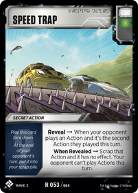
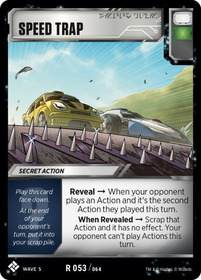

Sideboards
Bits and Bolts - Exploring TF:TCG Synergy
2020.08.06
Welcome to Bits and Bolts, a series intended to help Transformers the Trading Card Game newcomers discover some of the valuable interactions between different cards.
We all focus on the cards we're putting in our decks, but when it's time to play in a tournament we also need to think about our sideboard. If you're having trouble deciding what cards to include, consider the following options. These are taken by analyzing the decks in the most recent Vector Sigma Alpha Trion tournament for the most commonly sideboarded cards, and they represent a great set of cards to react to your opponent.


The three most popular sideboard cards, each of them was in over half of the 32 player's sideboards. Holomatter Projectors help to stop damage doers, like Quake and Horri-Bull, Belligerence is a great way to push through those defensive decks, and Counterespionage lets you get around your opponent's secret action plays, or remove a fearsome action from their hand. Folk averaged a couple of Belligerences in their sideboards - this may seem unusual, however on average folk had a Holomatter Projector and a Counterespionage in their main decks as well.
{kind=link}
 

Our next batch of popular sideboard options, Tripwire is a nice way to mess with your opponent's 5-star characters of Heads, Decipher punishes Secret Action decks, and Speed Trap is a useful card to mess with Brainstorms, Spymaster's Ruse, and various Combo decks.
Lastly we have Hijack, which punishes your opponent when they try to draw a second card, though note that it doesn't stop Perceptor who moves cards to the hand, Hold the Line, which is a hugely valuable card when battling against Titan Masters, and Take Cover, which protects from pierce. Hold the Line and Take Cover also showed up in folks' main decks.
You'll notice that we've only seen 9 cards here. You could go with the numbers and include two Belligerence cards in your sideboard, matching the average Alpha Trion sideboard, or you might want to consider one of the slightly less popular sideboard options, like Supporting Fire, Reflect Damage, or Disassemble.
Whatever you decide, relying of the wisdom of the crowd is not a bad place to start. Thank you for reading.